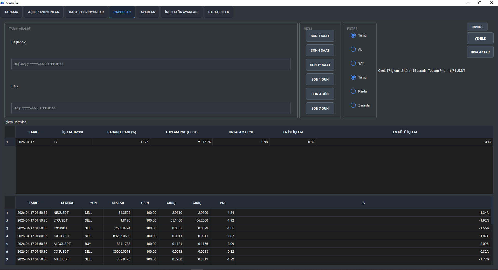
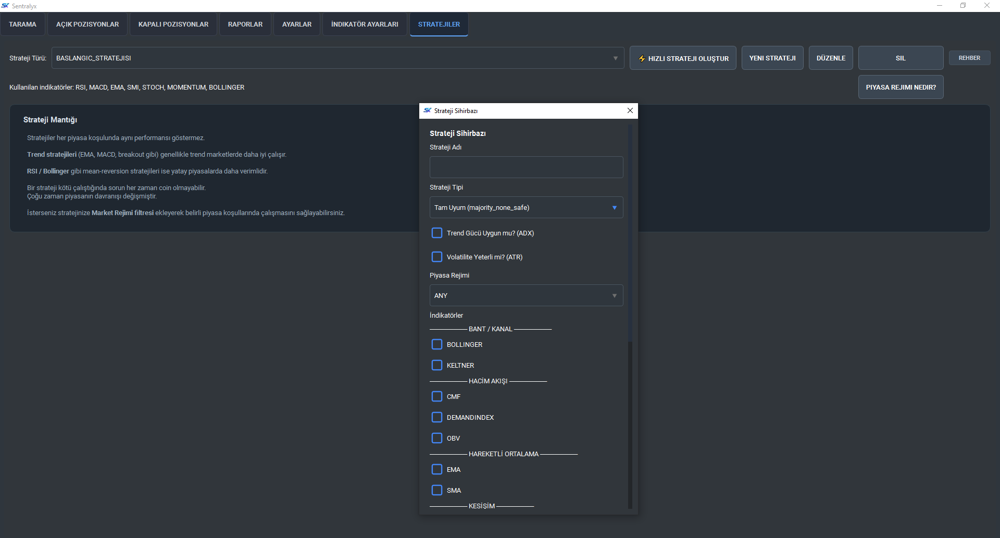
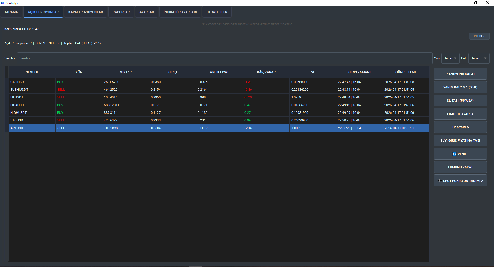
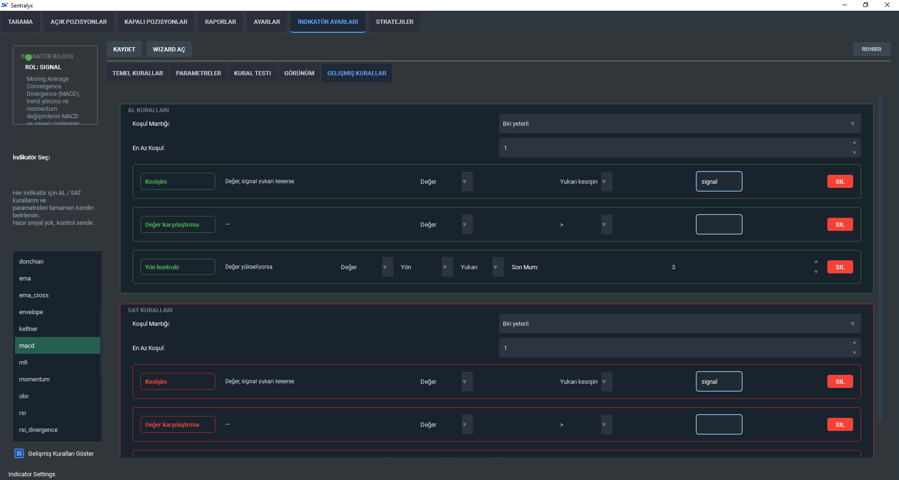

Trading Süreçlerinizi Otomatize Edin
Sentralyx ile piyasa verilerini saniyeler içinde analiz edin, stratejinizi belirleyin ve verimliliği artırın.

Sentralyx ile piyasa verilerini saniyeler içinde analiz edin, stratejinizi belirleyin ve verimliliği artırın.
Piyasadaki yüzlerce pariteyi aynı anda, belirlediğiniz teknik kriterlere göre tarayın. MTF (Çoklu Zaman Dilimi) onayı ile sinyal kalitesini en üst seviyeye taşıyın.
Tüm işlemlerinizi detaylı olarak raporlayın. Başarı oranınızı, kâr/zarar grafiklerinizi ve strateji performansınızı tek ekrandan izleyin.

Bir trader'ın ihtiyacı olan tüm araçlar tek bir terminalde toplandı.

Majority, Scoring ve Full Consensus yöntemleriyle kendi karar mekanizmanızı kurun.

Tüm açık işlemlerinizi anlık PnL verileriyle takip edin ve yönetin.

Kullandığınız indikatörlerin parametrelerini stratejinize göre optimize edin.